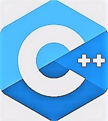

Carla Paz


Mi nombre es Carla, tengo 25 años
Disfruto de las matemáticas, los idiomas y programar.
- Estoy en segundo año del profesorado en Informática e Informática aplicada en INPST y curso materias de segundo y tercero de la Lic. de Gerencia de empresas en UNDAV Trabajé dos años como asistente de ventas en una pequeña pyme hasta 2020.
- Pero actualmente estoy enfocando todo mi tiempo en programar y estudiar . Por lo cual, además, me encuentro realizando el curso de Desarrollo Web (FRONT-END) de Fundación Telefónica.
- SKILLS
- Programción

-
Desarrollo web
- IDIOMAS
- Inglés(nivel 3)- En curso
- Esloveno (nivel 1)- En curso
- Portugués (nivel 2)